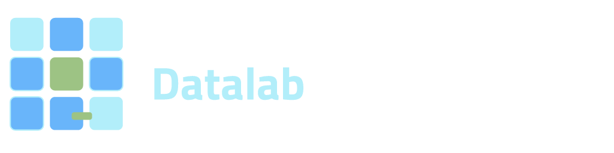

Steward model
The steward custodies the sandbox, sets access, and keeps traceability. Partners bring use cases and permitted data without giving up control of sensitive assets.

Datalab powered by CleantechHUB
Open consortium · Datalab
Steward model with shared data and tools under clear rules. Datalab is the engine under the Tecnológica lens of the Earth Observatory at Universidad Externado de Colombia.
The steward custodies the sandbox, sets access, and keeps traceability. Partners bring use cases and permitted data without giving up control of sensitive assets.
Infrastructure, test environments, and technical governance to move from exploration to decisions with Datalab powered by CleantechHUB co-branding.
Clean Air for Health Sandbox
First active case: air quality visualization, data ingestion, and risk dashboards for public health and technical teams.
 CTH - Data infrastructure, access rules and traceability
CTH - Data infrastructure, access rules and traceability
Datalab powered by CleantechHUB
Open Air Sandbox connects sensors, open data, and multidisciplinary teams. Datalab environment views with sample data where applicable.


Datalab environment, demo data